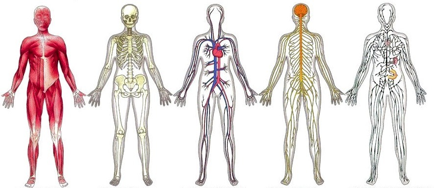

Process
STEPS
So, let's get ourselves started! Your groups will be determined by a random selection from the generator at the top of this page. Since there are 11 main organ systems to be featured, you will only be generating numbers from 1 to 11. This number will then determines your group number.
Once you picked your organ system, you're ready to start with the diagram!
Step 1: Draw a clear diagram of the organ system that was picked and outline it inside the human
body. Make sure to draw carefully and use plenty of colors for a better evaluation later on!
Step 2: Next, write a one-page summary of your organ system, which will include :
A description of each organ and its function.
How the organs work together to function as a system.
How the organ system functions to serve the human body.
Any other interesting facts about your organ system.
Step 3: Present your organ system to the class! Here's are some tips:
Stand tall with your backside parallel
Project your voice so everyone can hear you clearly
Make sure everybody in the group gets to talk
Do not stutter or pause in the middle of a sentence